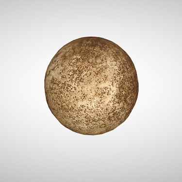
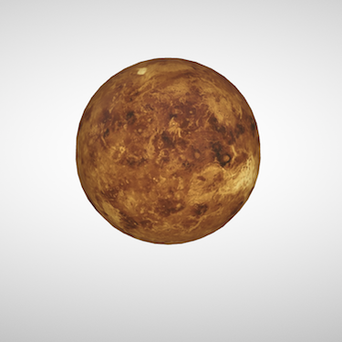
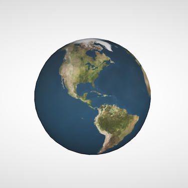
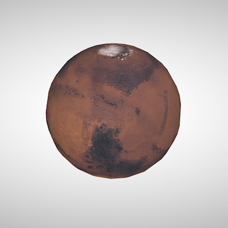

Mercury is the smallest and innermost planet in the Solar System. Its orbital period around the Sun of 87.97 days is the shortest of all the planets in the Solar System. It is named after the Roman deity Mercury, the messenger of the gods.
 badger.gltfVenus is the second planet from the Sun, orbiting it every 224.7 Earth days. It has the longest rotation period (243 days) of any planet in the Solar System and rotates in the opposite direction to most other planets. It does not have any natural satellites. It is named after the Roman goddess of love and beauty.
 bison.gltfEarth is the third planet from the Sun and the only object in the Universe known to harbor life. According to radiometric dating and other sources of evidence, Earth formed over 4 billion years ago. Earth's gravity interacts with other objects in space, especially the Sun and the Moon, Earth's only natural satellite.
 tapir.gltfMars is the fourth planet from the Sun and the second-smallest planet in the Solar System after Mercury. In English, Mars carries a name of the Roman god of war, and is often referred to as the "Red Planet" because the reddish iron oxide prevalent on its surface gives it a reddish appearance.
 cactus-wren.gltf